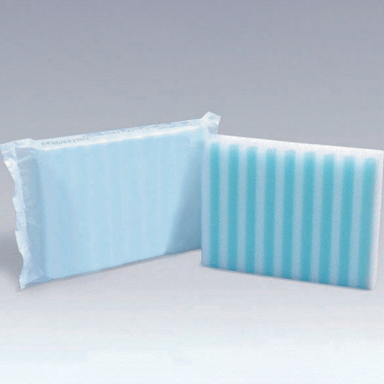

The Hidden Cost of Traditional Bed Baths
Every day, nursing staff in hospitals, long-term care facilities, and rehabilitation centers perform hundreds of bed baths using traditional basins, washcloths, and bar soap. What seems like a routine task carries hidden costs: an average traditional bed bath takes 25 to 35 minutes, requires multiple supplies, involves water handling, and creates a significant cross-contamination risk when the same basin water is reused throughout the washing process.
Research published in infection control journals has shown that basins used during conventional bed bathing can harbor thousands of colony-forming units per milliliter after just a few minutes of use. The warm, soapy water becomes a breeding ground for pathogens — precisely the opposite of what a hygiene procedure should achieve. This is where disposable pre-soaped bath washgloves offer a fundamentally better approach.
What Are Pre-Soaped Wash Mitts?
Disposable body pre-soap wash mitts — also referred to as disposable soapy wash gloves — are single-use, pre-moistened, and pre-soaped cleansing mitts designed for full-body patient bathing. Each mitt is individually packaged, ready to use straight from the wrapper, and requires no additional water, soap, or rinsing.
The typical construction uses a soft, non-woven or spunlace fabric substrate infused with a mild, pH-balanced cleansing solution that cleanses, moisturizes, and protects the skin in one step. After use, the mitt is simply discarded — eliminating the cross-contamination vectors inherent in basin-and-cloth methods.
Key advantages include:
- Speed: Studies show pre-moistened wash mitts can reduce full bed bath time by 40% to 50%, freeing up valuable nursing time for other clinical tasks.
- Infection prevention: Single-use design eliminates the risk of pathogen transfer between body zones or between patients.
- Skin health: Pre-formulated cleansing solutions are typically pH-balanced (around 5.5), helping maintain the skin's natural acid mantle — especially important for elderly or immunocompromised patients.
- Staff satisfaction: Less physical setup and cleanup means less ergonomic strain and a more comfortable workflow for caregivers.
- Patient comfort: Warmer water temperature can be maintained throughout the bath since there's no basin to cool down.
Market Growth and Adoption Trends
The global market for disposable patient bathing products has experienced steady growth, driven by several converging factors:
Aging demographics. Populations in North America, Europe, and East Asia are aging rapidly, increasing the number of patients who require assisted bathing in both hospital and long-term care settings. The United Nations projects that by 2030, one in six people worldwide will be over 60 — a demographic shift that directly increases demand for efficient, safe patient hygiene solutions.
Infection control mandates. Regulatory bodies and hospital accreditation organizations are increasingly emphasizing infection prevention protocols. The shift from reusable washcloths to single-use alternatives aligns with broader healthcare initiatives to reduce healthcare-associated infections (HAIs), including catheter-associated urinary tract infections (CAUTIs) and Clostridioides difficile transmissions.
Labor cost pressures. With nursing shortages affecting hospitals globally, any product that saves time per task without compromising care quality becomes a strategic purchase. A 15-minute reduction per bed bath, multiplied across dozens of daily baths, translates into hours of reclaimed nursing capacity.
Procurement Considerations for Buyers
When sourcing disposable bath wipes with soap for institutional use, procurement managers should evaluate several factors:
1. Material Quality
The non-woven substrate should be soft enough for sensitive skin yet durable enough to withstand thorough cleansing. Spunlace fabrics offer a good balance of softness and strength, while airlaid materials provide enhanced absorbency for heavier soilage.
2. Cleansing Formulation
Look for pH-balanced formulas free from parabens, alcohol, and harsh surfactants. Aloe vera, chamomile, and vitamin E are common skin-friendly additives that help prevent dryness and irritation — especially important for patients bathing daily.
3. Packaging and Shelf Life
Individual wrapping prevents the pre-soap solution from drying out before use. A shelf life of at least 24 months ensures reliable stock management without waste.
4. Regulatory Compliance
Ensure the manufacturer holds relevant certifications. For medical-grade products, ISO 13485 quality management certification is essential. CE marking and FDA registration provide additional assurance for markets in Europe and North America.
5. Cost-per-Bath Analysis
While the per-unit cost of pre-soaped mitts is higher than traditional washcloths and soap, the total cost of ownership often favors disposables when factoring in reduced bathing time, lower infection rates, eliminated laundry costs, and decreased staff overtime.
"The transition from traditional bed baths to disposable pre-soaped wash mitts isn't just about convenience — it's about patient safety, staff efficiency, and measurable cost savings. Facilities that make the switch typically see a return on investment within the first quarter of adoption."
Newrise Medical: Your Reliable Manufacturer Partner
Changzhou Newrise Medical & Hygiene Products Co., Ltd. has been manufacturing disposable medical and hygiene products since 2004. Our 40,000-square-meter facility in Changzhou, Jiangsu, operates a 100,000-class cleanroom (1,500㎡) and produces a comprehensive range of infection control and patient care products — including disposable body pre-soap wash mitts and disposable pre-soap bath washgloves.
Our product advantages:
- ISO 13485:2016 certified quality management system
- CE and FDA registered for international market access
- 20+ years of manufacturing experience in disposable medical products
- Custom OEM/ODM services — private labeling, custom formulations, and bespoke packaging
- Exporting to 50+ countries with a proven track record of reliable supply
- 24-hour response time from our dedicated sales team
Whether you're a distributor looking for a dependable factory partner or a hospital procurement team evaluating new bathing protocols, our team is ready to provide samples, technical specifications, and competitive quotations.
Contact Rachel, our Sales Manager, at +86 519 86580890 or info@cznewrise.com to discuss your requirements.